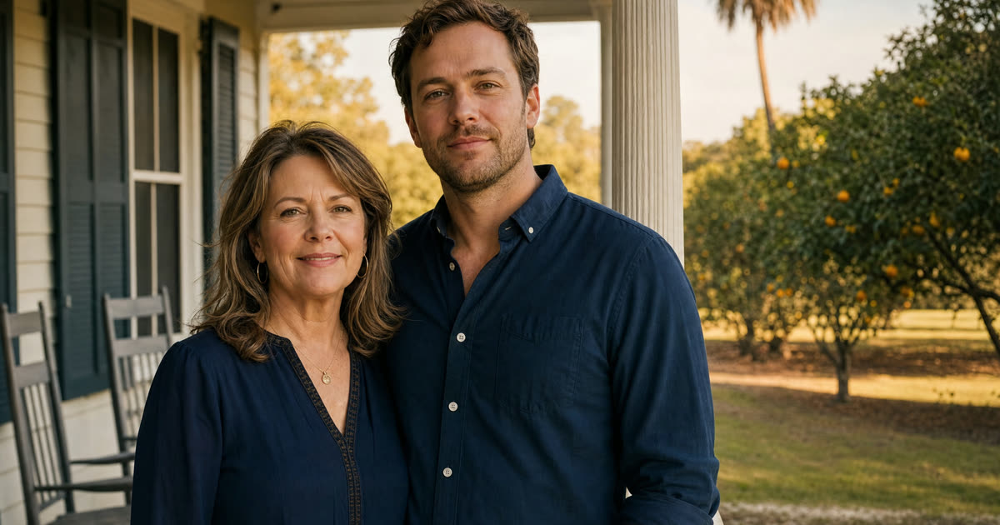

Ruth and Howard's Problem: A Direct Inheritance Would Backfire
Ruth and Howard, 70 and 72, live in Ormond Beach. Their son Daniel, 40, has schizophrenia and depends on Supplemental Security Income (SSI) and Medicaid for his income and his healthcare. Ruth and Howard are a composite family, not actual Truestead clients, but their situation is one I see often in this practice.
Like many parents in their position, Ruth and Howard's first instinct was simple: leave Daniel his share in their will, the same as his siblings. But SSI and Medicaid both impose a resource limit, and that limit is very low, typically no more than $2,000 in countable assets. An inheritance paid directly to Daniel, even a modest one, would very likely push him over that line the moment it landed in his name. He could lose his monthly SSI check and his Medicaid coverage until the money was spent down, and reapplying afterward is neither quick nor guaranteed.
An irrevocable trust is one that Ruth and Howard, once it is signed and funded, cannot simply revoke or amend on their own. That loss of easy control is exactly what lets a properly drafted trust hold assets for Daniel's benefit without those assets being treated as his own for eligibility purposes.
Have this exact situation? Talk it through with a Florida attorney — the 20-minute consultation is free.
Book Free Consult or call (888) 388-8445Third-Party vs. First-Party: Why the Source of the Money Matters
Not all special needs trusts are built the same way, and the difference comes down to whose money funds the trust.
- A third-party special needs trust is funded with someone else's assets, typically a parent's or grandparent's. This is Ruth and Howard's situation: the money going into Daniel's trust was always theirs.
- A first-party (self-settled) special needs trust is funded with the beneficiary's own money, often the proceeds of a personal injury settlement or an inheritance received directly and later redirected into a trust.
The distinction matters enormously at the end of the beneficiary's life. A first-party trust must generally reimburse Medicaid for benefits paid during the beneficiary's lifetime before anything passes to other heirs. A properly drafted third-party trust, funded entirely with Ruth and Howard's money, has no such payback requirement. Whatever remains in Daniel's trust when he dies goes to the remainder beneficiaries Ruth and Howard name, typically Daniel's siblings, without owing Medicaid a dollar. This is one of the strongest reasons parents choose to fund a third-party trust during their own estate planning rather than leave things to be sorted out later.
What the Trustee Can Actually Pay For
A special needs trust is meant to supplement Daniel's benefits, not replace them, and the trust document should say so plainly. The trustee's job is to spend trust money on things SSI and Medicaid do not already cover, while being careful about a rule called in-kind support and maintenance (ISM).
Under the ISM rules, if a special needs trust pays directly for a beneficiary's food or shelter, such as rent, mortgage payments, or a grocery bill, that payment can be treated as unearned income and reduce the beneficiary's monthly SSI check. It will not disqualify Daniel outright, but it can shrink his benefit, sometimes significantly. A well-run trust generally pays for things outside that narrow category instead:
- Education, tutoring, and vocational training
- Uncovered medical, dental, and therapeutic care
- Companion or personal care services
- Recreation, travel, and hobbies
- A computer, phone, and other technology
- Furniture, personal items, and legal fees
Naming the Trust, Not Daniel, on Accounts and the Will
A special needs trust only protects Daniel if the money actually ends up inside it. This is where I see the most costly mistakes, usually made with the best intentions.
If Ruth and Howard's will leaves Daniel his share outright, or if a life insurance policy, IRA, or bank account lists Daniel by name as beneficiary, that asset will pass directly to him, bypassing the trust entirely, no matter how well the trust itself is drafted. The fix is coordination: Ruth and Howard's wills (or their revocable living trust, if they have one) should direct Daniel's share into his special needs trust rather than to him personally, and every account with a beneficiary designation, retirement accounts, life insurance, payable-on-death bank accounts, needs to name the trust as beneficiary for Daniel's portion. This is a detail worth revisiting any time a new account is opened or an old one is closed.
If Ruth and Howard's home is Florida homestead property, they should also have that discussed separately, since homestead carries its own constitutional rules about who can inherit it and how, and a trust holding homestead property raises questions that a straightforward bank account does not.
The ABLE Account: A Companion Tool, Not a Substitute
Florida's ABLE program lets a person whose disability began before age 26 open a tax-advantaged savings account, and Daniel likely qualifies given his history. An ABLE account can hold funds up to a set limit (a number that Florida families should confirm current, since it can change year to year) without those funds counting against SSI's resource limit, and Florida no longer seeks Medicaid recovery from ABLE account balances.
But an ABLE account is not a substitute for Daniel's trust. Annual contributions to an ABLE account are capped, and the account itself has an overall balance limit before it starts to affect SSI eligibility. A special needs trust has no such contribution cap and no SSI-related balance ceiling, which is why it remains the right vehicle for a meaningful inheritance. Many Florida families use both: the trust holds and manages the larger inheritance, while a modest ABLE account gives Daniel some money he can spend more freely, including in some cases on his own housing costs, without the ISM concerns that apply to trust distributions.
Choosing Daniel's Trustee, and Who Comes Next
Ruth and Howard's hardest decision may not be whether to create the trust, but who should run it once they no longer can. A sibling trustee is common in Florida families, and it can work well when that sibling understands the ISM rules, is willing to keep careful records, and has a good working relationship with Daniel. But it is also a real responsibility, potentially for decades, and not every family member wants it or should be asked to carry it.
Alternatives include a corporate trustee, such as a bank trust department, or a professional fiduciary, sometimes paired with a sibling serving as a trust protector who can weigh in on major decisions or replace a trustee who is not working out. Florida's Trust Code, Chapter 736, also allows a properly drafted irrevocable trust to be adjusted after the fact in defined ways, through a nonjudicial settlement agreement among the interested parties, judicial modification, or decanting into a new trust under section 736.04117, so naming a trustee today does not lock a family into that choice forever if circumstances change.
Frequently Asked Questions
The Truestead Takeaway
For Ruth and Howard, the answer to how they leave money to Daniel without ending his SSI and Medicaid is not to leave it to him at all, but to leave it to a trust built for him: a third-party special needs trust that supplements his benefits, pays for the things Medicaid and SSI do not cover, and passes what remains to his siblings without any Medicaid payback. Getting there means more than signing a trust document; it means updating the will, retitling beneficiary designations on every account and policy, choosing a trustee who understands the rules, and naming successors so the plan does not depend on any one person forever. Every family's mix of benefits, assets, and relationships is different, and this kind of plan should be built with a Florida attorney who can walk through Daniel's specific situation in detail.
Have a child turning 18? Get the free 18 & Protected packet — the legal documents every Florida 18-year-old needs.
Get the Free PacketTalk to a Florida Attorney
Every family’s situation is different. Schedule a consultation with Arthur Simpson, Esq. to review your plan and your options under Florida law.
Schedule a Consultation →This article is for general informational purposes only and does not constitute legal advice, nor does reading it create an attorney-client relationship. Florida estate, elder, probate, and real estate law are fact-specific and change over time. Consult a licensed Florida attorney about your individual circumstances. Arthur Simpson, Esq. is licensed to practice law in the State of Florida. Attorney advertising.
Talk to a Florida Attorney — Free 20-Minute Consultation
Pick a time below. No obligation, no pressure — just answers.